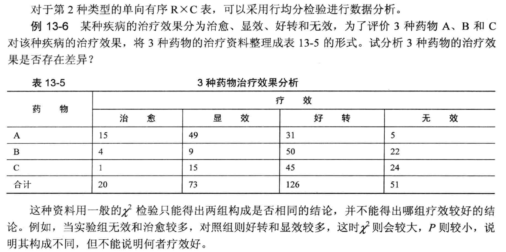
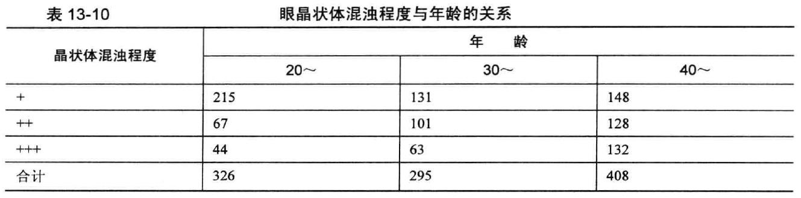
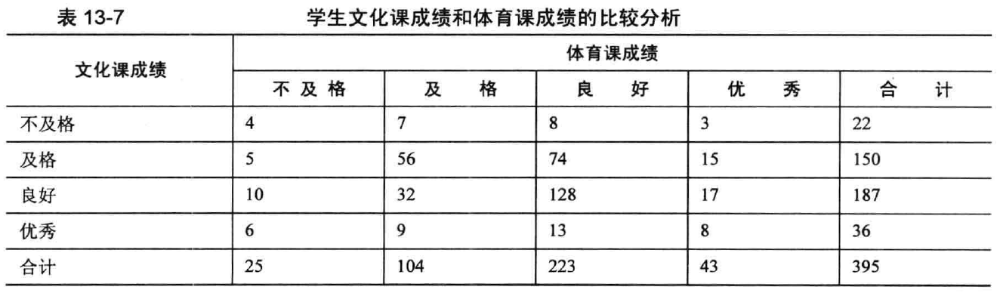
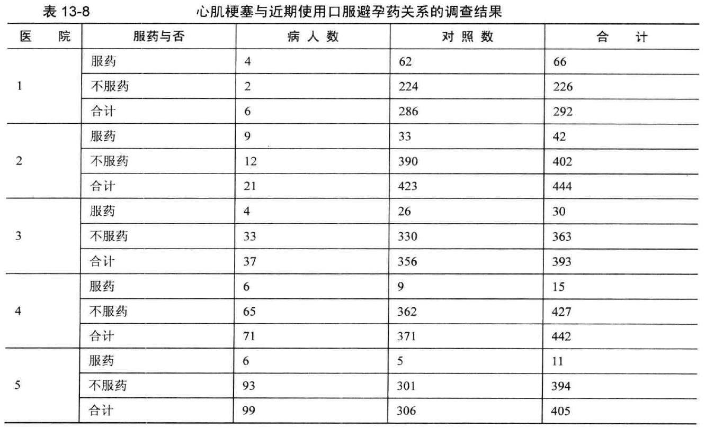

Chapter 3 列联表资料的处理
3.1 R×C表分类
- 双向无序R X C 表， 表中两个分类变量皆为无序分类变量
①若研究目的为多个样本率(或构成比) 比较，可用行×列表资料的 \(\chi ^2\) 检验 ②若研究目的为分析两个分类变量之间有无关联性以及关系的密切程度，可以用行×列表资料的\(\chi^2\)检验，以及Pearson 列联系数分析
- 单向有序R X C 表有两种形式
①RXC 表中的分组变量是有序的，而结局变量是无序的，此种单向有序RXC 表资料可以用行×列表资料的\(\chi^2\)检验进行分析 ②RXC 表中的分组变量是无序的，而结局变量是有序的，此种单向有序RXC表资料直用秩和检验分析
双向有序属性相同R X C表，表中的两个分类变量皆为有序且属性相同。实际上是2 X 2配对设计的扩展，此时宜用一致性检验(或称Kappa 检验)。
双向有序属性不同R X C 表，表中两个分类变量皆为有序且属性不同。对于该类资料，需要分析两个有序分类变量间是否存在线性变化趋势， 可用有序分组资料线性趋势检验。
3.2 列变量为有序变量的行均分检验（Cochran-Mantel-Haenszel）

3.2.1 行均分检验Cochran-Mantel-Haenszel
# 行均分检验 Cochran-Mantel-Haenszel
Example13_7 <- read.table ("data/example13_7.csv", header=TRUE, sep=",")
attach(Example13_7)
mytable <- xtabs(~a + b)
library(gmodels)## Registered S3 method overwritten by 'gdata':
## method from
## reorder.factor gplotsCrossTable(a, b)##
##
## Cell Contents
## |-------------------------|
## | N |
## | Chi-square contribution |
## | N / Row Total |
## | N / Col Total |
## | N / Table Total |
## |-------------------------|
##
##
## Total Observations in Table: 270
##
##
## | b
## a | 1 | 2 | 3 | 4 | Row Total |
## -------------|-----------|-----------|-----------|-----------|-----------|
## 1 | 5 | 31 | 49 | 15 | 100 |
## | 10.212 | 5.260 | 17.841 | 7.782 | |
## | 0.050 | 0.310 | 0.490 | 0.150 | 0.370 |
## | 0.098 | 0.246 | 0.671 | 0.750 | |
## | 0.019 | 0.115 | 0.181 | 0.056 | |
## -------------|-----------|-----------|-----------|-----------|-----------|
## 2 | 22 | 50 | 9 | 4 | 85 |
## | 2.201 | 2.692 | 8.506 | 0.837 | |
## | 0.259 | 0.588 | 0.106 | 0.047 | 0.315 |
## | 0.431 | 0.397 | 0.123 | 0.200 | |
## | 0.081 | 0.185 | 0.033 | 0.015 | |
## -------------|-----------|-----------|-----------|-----------|-----------|
## 3 | 24 | 45 | 15 | 1 | 85 |
## | 3.931 | 0.717 | 2.772 | 4.455 | |
## | 0.282 | 0.529 | 0.176 | 0.012 | 0.315 |
## | 0.471 | 0.357 | 0.205 | 0.050 | |
## | 0.089 | 0.167 | 0.056 | 0.004 | |
## -------------|-----------|-----------|-----------|-----------|-----------|
## Column Total | 51 | 126 | 73 | 20 | 270 |
## | 0.189 | 0.467 | 0.270 | 0.074 | |
## -------------|-----------|-----------|-----------|-----------|-----------|
##
## library(vcdExtra)## 载入需要的程辑包：vcd##
## 载入程辑包：'vcd'## The following object is masked from 'package:HH':
##
## odds## The following object is masked from 'package:latticeExtra':
##
## rootogram## 载入需要的程辑包：gnm##
## 载入程辑包：'gnm'## The following object is masked from 'package:lattice':
##
## barley##
## 载入程辑包：'vcdExtra'## The following object is masked from 'package:carData':
##
## BurtCMHtest(mytable) ## Cochran-Mantel-Haenszel Statistics for a by b
##
## AltHypothesis Chisq Df Prob
## cor Nonzero correlation 46.297 1 1.0160e-11
## rmeans Row mean scores differ 58.678 2 1.8125e-13
## cmeans Col mean scores differ 48.838 3 1.4122e-10
## general General association 66.958 6 1.7167e-12detach (Example13_7)结果解读 1
●阅读结果时，阅读第二行的结果
AltHypothesis Chisq Df Prob
rmeans Row mean scores differ 58.678 2 1.8125e-13此处卡方值是58.678，P＜0.0001
3.2.2 Ordinal logistic回归模型
# 用Ordinal logistic回归模型
Example13_7 <- read.table ("data/example13_7.csv", header=TRUE, sep=",")
attach(Example13_7)
# 以下三行为设置哑变量
Example13_7$x1 <- ifelse (a==1, 1, 0)
Example13_7$x2 <- ifelse (a==2, 1, 0)
Example13_7$x3 <- ifelse (a==3, 1, 0)
library(rms)## 载入需要的程辑包：Hmisc## 载入需要的程辑包：Formula## 载入需要的程辑包：ggplot2##
## 载入程辑包：'ggplot2'## The following object is masked from 'package:latticeExtra':
##
## layer##
## 载入程辑包：'Hmisc'## The following objects are masked from 'package:base':
##
## format.pval, units## 载入需要的程辑包：SparseM##
## 载入程辑包：'SparseM'## The following object is masked from 'package:base':
##
## backsolve##
## 载入程辑包：'rms'## The following object is masked from 'package:HH':
##
## vif## The following objects are masked from 'package:car':
##
## Predict, vif# 拟合等级回归模型，此处实际上是以C(x3=1)为参照
fit1 <- lrm(b~ x1 + x2 , data=Example13_7, model=FALSE, x=FALSE, y=FALSE)
fit1## Logistic Regression Model
##
## lrm(formula = b ~ x1 + x2, data = Example13_7, model = FALSE,
## x = FALSE, y = FALSE)
##
##
## Frequencies of Responses
##
## 1 2 3 4
## 51 126 73 20
##
## Model Likelihood Discrimination Rank Discrim.
## Ratio Test Indexes Indexes
## Obs 270 LR chi2 66.98 R2 0.241 C 0.686
## max |deriv| 3e-07 d.f. 2 g 0.976 Dxy 0.372
## Pr(> chi2) <0.0001 gr 2.654 gamma 0.536
## gp 0.213 tau-a 0.249
## Brier 0.174
##
## Coef S.E. Wald Z Pr(>|Z|)
## y>=2 0.9782 0.2248 4.35 <0.0001
## y>=3 -1.5521 0.2432 -6.38 <0.0001
## y>=4 -3.7483 0.3375 -11.11 <0.0001
## x1 2.0850 0.3088 6.75 <0.0001
## x2 0.0028 0.2955 0.01 0.9926
## # 将fit1的回归系数单列出来
coefficients(fit1)## y>=2 y>=3 y>=4 x1 x2
## 0.978150920 -1.552142851 -3.748324155 2.084976695 0.002753265# 将回归系数取对数，得到OR值
exp(coefficients(fit1))## y>=2 y>=3 y>=4 x1 x2
## 2.65953400 0.21179365 0.02355719 8.04440400 1.00275706detach (Example13_7)说明： 哑变量设置后，a列实际上由X1、X2、X3三列表示，a列中1变为(1,0,0)，2变为(0.1.0),3变为(0,0,1)
结果判读 2 (1) y=2，y=3, y=4实际上是以y=1作为参照
主要解读x1 & x2等自变量的结果
计算OR值，对于累积比数因变量模型，平行性假设决定了每个自变量的OR值对于前g-1 个模型是相同的。例如，自变量xl 的OR=8.044 ，表示使用A 药物治愈的可能性是C药物的8.044 倍;也表示使用A 药物显效或治愈的可能性是C药的8.044倍;同时也表示使用A 药物至少好转的可能性是C药的8.044 倍。
3.3 行列变量均为有序变量检验方法
双向有序属性不同R X C表
例13-8 为了研究晶状体混浊程度是否与年龄相关，将资料整理为表13 -6 的形式，试编写R程序，分析年龄与晶状体混浊程度的相关关系。 
3.3.1 sperman秩相关
Example13_8 <- read.table ("data/example13_8.csv", header=TRUE, sep=",")
attach(Example13_8)
cor(Example13_8, method="spearman") #计算秩相关系数## a b
## a 1.0000000 0.2533556
## b 0.2533556 1.0000000cor.test(a, b, method="spearman") # 检验秩相关系数有无意义## Warning in cor.test.default(a, b, method = "spearman"): Cannot compute exact p-
## value with ties##
## Spearman's rank correlation rho
##
## data: a and b
## S = 135583954, p-value < 2.2e-16
## alternative hypothesis: true rho is not equal to 0
## sample estimates:
## rho
## 0.2533556detach (Example13_8)结果解读
查看相关系数以及P值
3.3.2 线性趋势检验
# 双向有序属性不同 线性趋势检验
Example13_8 <- read.table ("data/example13_8.csv", header=TRUE, sep=",")
attach(Example13_8)
library(gmodels)
CrossTable(a, b)##
##
## Cell Contents
## |-------------------------|
## | N |
## | Chi-square contribution |
## | N / Row Total |
## | N / Col Total |
## | N / Table Total |
## |-------------------------|
##
##
## Total Observations in Table: 1029
##
##
## | b
## a | 1 | 2 | 3 | Row Total |
## -------------|-----------|-----------|-----------|-----------|
## 1 | 215 | 131 | 148 | 494 |
## | 21.863 | 0.797 | 11.700 | |
## | 0.435 | 0.265 | 0.300 | 0.480 |
## | 0.660 | 0.444 | 0.363 | |
## | 0.209 | 0.127 | 0.144 | |
## -------------|-----------|-----------|-----------|-----------|
## 2 | 67 | 101 | 128 | 296 |
## | 7.646 | 3.070 | 0.964 | |
## | 0.226 | 0.341 | 0.432 | 0.288 |
## | 0.206 | 0.342 | 0.314 | |
## | 0.065 | 0.098 | 0.124 | |
## -------------|-----------|-----------|-----------|-----------|
## 3 | 44 | 63 | 132 | 239 |
## | 13.287 | 0.444 | 14.631 | |
## | 0.184 | 0.264 | 0.552 | 0.232 |
## | 0.135 | 0.214 | 0.324 | |
## | 0.043 | 0.061 | 0.128 | |
## -------------|-----------|-----------|-----------|-----------|
## Column Total | 326 | 295 | 408 | 1029 |
## | 0.317 | 0.287 | 0.397 | |
## -------------|-----------|-----------|-----------|-----------|
##
## mytable <- xtabs(~a + b)
chisq.test(mytable)##
## Pearson's Chi-squared test
##
## data: mytable
## X-squared = 74.402, df = 4, p-value = 2.667e-15fit <- lm(a~b)
summary(fit)##
## Call:
## lm(formula = a ~ b)
##
## Residuals:
## Min 1Q Median 3Q Max
## -0.97398 -0.73298 0.02602 0.50802 1.50802
##
## Coefficients:
## Estimate Std. Error t value Pr(>|t|)
## (Intercept) 1.25098 0.06501 19.242 < 2e-16 ***
## b 0.24100 0.02898 8.315 2.88e-16 ***
## ---
## Signif. codes: 0 '***' 0.001 '**' 0.01 '*' 0.05 '.' 0.1 ' ' 1
##
## Residual standard error: 0.7817 on 1027 degrees of freedom
## Multiple R-squared: 0.06308, Adjusted R-squared: 0.06217
## F-statistic: 69.15 on 1 and 1027 DF, p-value: 2.876e-16coefficients(fit)## (Intercept) b
## 1.2509772 0.2410021confint(fit)## 2.5 % 97.5 %
## (Intercept) 1.1234015 1.3785529
## b 0.1841306 0.2978736detach (Example13_8)双向有序属性相同R X C表——一致性检验 例13-11 某学校学生的文化课成绩和体育课成绩整理如表13-7 所示，试对学生文化课和体育课成绩进行一致性检验。 
3.3.3 一致性检验
# 一致性检验
Example13_10 <- read.table ("data/example13_10.csv", header=TRUE, sep=",")
attach(Example13_10)
library(gmodels)
CrossTable(a, b)##
##
## Cell Contents
## |-------------------------|
## | N |
## | Chi-square contribution |
## | N / Row Total |
## | N / Col Total |
## | N / Table Total |
## |-------------------------|
##
##
## Total Observations in Table: 395
##
##
## | b
## a | 1 | 2 | 3 | 4 | Row Total |
## -------------|-----------|-----------|-----------|-----------|-----------|
## 1 | 4 | 7 | 8 | 3 | 22 |
## | 4.883 | 0.252 | 1.573 | 0.153 | |
## | 0.182 | 0.318 | 0.364 | 0.136 | 0.056 |
## | 0.160 | 0.067 | 0.036 | 0.070 | |
## | 0.010 | 0.018 | 0.020 | 0.008 | |
## -------------|-----------|-----------|-----------|-----------|-----------|
## 2 | 5 | 56 | 74 | 15 | 150 |
## | 2.127 | 6.899 | 1.348 | 0.108 | |
## | 0.033 | 0.373 | 0.493 | 0.100 | 0.380 |
## | 0.200 | 0.538 | 0.332 | 0.349 | |
## | 0.013 | 0.142 | 0.187 | 0.038 | |
## -------------|-----------|-----------|-----------|-----------|-----------|
## 3 | 10 | 32 | 128 | 17 | 187 |
## | 0.285 | 6.033 | 4.765 | 0.554 | |
## | 0.053 | 0.171 | 0.684 | 0.091 | 0.473 |
## | 0.400 | 0.308 | 0.574 | 0.395 | |
## | 0.025 | 0.081 | 0.324 | 0.043 | |
## -------------|-----------|-----------|-----------|-----------|-----------|
## 4 | 6 | 9 | 13 | 8 | 36 |
## | 6.078 | 0.024 | 2.639 | 4.250 | |
## | 0.167 | 0.250 | 0.361 | 0.222 | 0.091 |
## | 0.240 | 0.087 | 0.058 | 0.186 | |
## | 0.015 | 0.023 | 0.033 | 0.020 | |
## -------------|-----------|-----------|-----------|-----------|-----------|
## Column Total | 25 | 104 | 223 | 43 | 395 |
## | 0.063 | 0.263 | 0.565 | 0.109 | |
## -------------|-----------|-----------|-----------|-----------|-----------|
##
## mytable <- xtabs(~a + b)
mcnemar.test(mytable)##
## McNemar's Chi-squared test
##
## data: mytable
## McNemar's chi-squared = 20.23, df = 6, p-value = 0.00252library(fmsb)##
## 载入程辑包：'fmsb'## The following object is masked from 'package:vcd':
##
## oddsratioKappa.test(mytable, conf.level=0.95)## $Result
##
## Estimate Cohen's kappa statistics and test the null hypothesis that
## the extent of agreement is same as random (kappa=0)
##
## data: mytable
## Z = 4.7276, p-value = 1.136e-06
## 95 percent confidence interval:
## 0.1068853 0.2661199
## sample estimates:
## [1] 0.1865026
##
##
## $Judgement
## [1] "Slight agreement"detach (Example13_10)3.4 分层行列表分析 Mantel-Haenszel 检验
例13-12 为研究心肌梗塞与近期使用避孕药之间的关系，在5所医院中采用病例-对照研究方法调查了234名心肌梗塞病人与1742 名对照者使用口服避孕药状况，资料见表13-8 。请在排除了研究医院影响后，分析使用口服避孕药与否对是否患心肌梗塞病的影响情况。
knitr::include_graphics("fig/5d.png")
3.4.1 Mantel-Haenszel 检验
# Mantel-Haenszel 检验
Example13_12 <- read.table ("data/example13_12.csv", header=TRUE, sep=",")
attach(Example13_12)
mytable <- xtabs(~drug + case + hos) #分层输出各家医院四格表频数
mytable## , , hos = 1
##
## case
## drug 1 2
## 1 4 62
## 2 2 224
##
## , , hos = 2
##
## case
## drug 1 2
## 1 9 33
## 2 12 390
##
## , , hos = 3
##
## case
## drug 1 2
## 1 4 26
## 2 33 330
##
## , , hos = 4
##
## case
## drug 1 2
## 1 6 9
## 2 65 362
##
## , , hos = 5
##
## case
## drug 1 2
## 1 6 5
## 2 93 301prop.table(mytable,3) #分层输出各家医院四格表百分数## , , hos = 1
##
## case
## drug 1 2
## 1 0.013698630 0.212328767
## 2 0.006849315 0.767123288
##
## , , hos = 2
##
## case
## drug 1 2
## 1 0.020270270 0.074324324
## 2 0.027027027 0.878378378
##
## , , hos = 3
##
## case
## drug 1 2
## 1 0.010178117 0.066157761
## 2 0.083969466 0.839694656
##
## , , hos = 4
##
## case
## drug 1 2
## 1 0.013574661 0.020361991
## 2 0.147058824 0.819004525
##
## , , hos = 5
##
## case
## drug 1 2
## 1 0.014814815 0.012345679
## 2 0.229629630 0.743209877addmargins(mytable) #分层输出各家医院四格表边际频数## , , hos = 1
##
## case
## drug 1 2 Sum
## 1 4 62 66
## 2 2 224 226
## Sum 6 286 292
##
## , , hos = 2
##
## case
## drug 1 2 Sum
## 1 9 33 42
## 2 12 390 402
## Sum 21 423 444
##
## , , hos = 3
##
## case
## drug 1 2 Sum
## 1 4 26 30
## 2 33 330 363
## Sum 37 356 393
##
## , , hos = 4
##
## case
## drug 1 2 Sum
## 1 6 9 15
## 2 65 362 427
## Sum 71 371 442
##
## , , hos = 5
##
## case
## drug 1 2 Sum
## 1 6 5 11
## 2 93 301 394
## Sum 99 306 405
##
## , , hos = Sum
##
## case
## drug 1 2 Sum
## 1 29 135 164
## 2 205 1607 1812
## Sum 234 1742 1976mantelhaen.test(mytable)##
## Mantel-Haenszel chi-squared test with continuity correction
##
## data: mytable
## Mantel-Haenszel X-squared = 32.793, df = 1, p-value = 1.025e-08
## alternative hypothesis: true common odds ratio is not equal to 1
## 95 percent confidence interval:
## 2.426983 6.493688
## sample estimates:
## common odds ratio
## 3.969895detach (Example13_12)